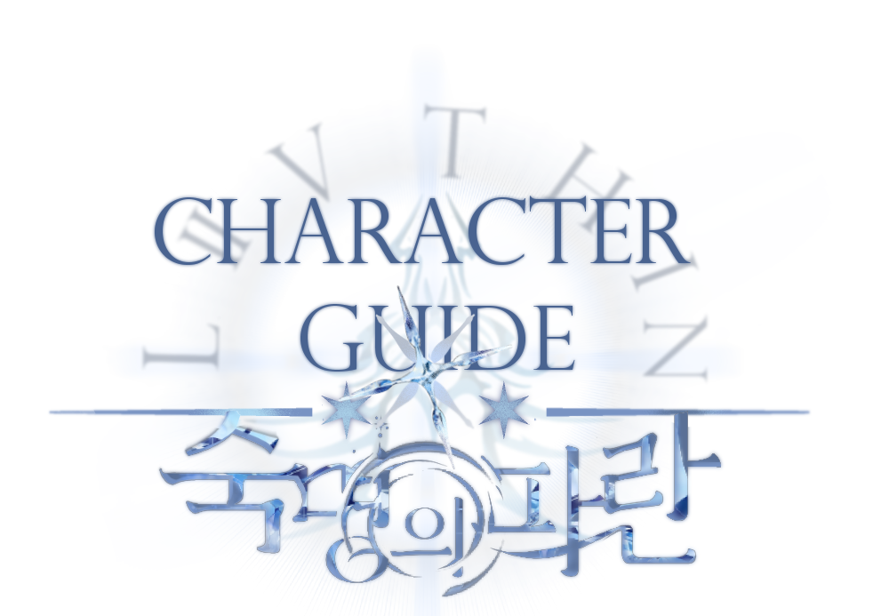
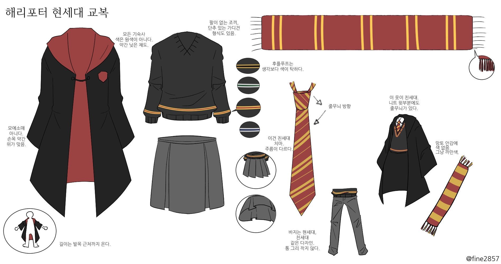

✶ 세계관 가이드
I. 용어 사용
러너분들의 편의를 위해 세계관 용어는 구판의 단어 (EX. 그린고트, 오클러먼시 등) 로 서술될 예정이나, 러너 개인의 역극에서는 개정판의 단어를 사용해도 무방합니다. 다만 전투 시스템 중 ‘마법 주문’의 경우, 개정판의 것을 사용하니 참고 부탁드립니다.
II.원작과의 차이 및 유의사항
본 커뮤니티는 원작과 일부 설정에서의 차이점 및 커뮤니티 고유의 유의사항을 가지며, 그 내용은 다음과 같습니다.
- 1991년을 1학년 입학 배경 시점으로 삼는 원작과 달리, 본 커뮤니티의 1학년 입학 배경 시점은 1975년입니다. 따라서 원작보다도 이전 시점을 배경으로 삼고 있으며, 관련하여 마법 세계는 분위기 및 문물의 발달 수준 차이가 없으나 머글 세계는 원작의 머글 세계와 비교하였을 때 분위기 및 기술 발전의 차이가 존재합니다. 이에 머글 세계에서 자라온 캐릭터를 조성할 예비 러너분들의 이해를 돕기 위하여, 당시 머글 사회의 시대적 분위기 및 문물을 세계관 문서에 간단하게나마 서술해놓았습니다.
- 다만 커뮤니티의 스토리 내에서는 머글 사회가 다루어지지 않을 예정이며, 현실적 분위기보다는 판타지적 분위기에 치중한 원작과 같이 마법 세계 내에서만 스토리가 진행될 예정입니다. 이 점 참고하여 캐릭터를 조성 및 스토리 진행에 참여할 준비를 마쳐주시면 감사하겠습니다.
- 마법 세계에서 어둠의 마왕 및 마법사 전쟁은 존재하지 않았습니다. 혈통 차별은 구시대적 사고방식이 되었으며, 현대의 나치즘 및 인종차별과 유사한 취급을 받는 사상이 되었습니다.
- 슬리데린의 이념은 시간이 지나고 혈통주의가 구시대적 사고관으로 변하자 그에 발맞춰가며 변했습니다. 그들의 최중요 가치관은 야망과 교활함이며, 더이상 학생을 선발할 때 혈통을 따지지 않습니다.
- 스네이프의 창작 주문들 (섹튬셈프라, 랭록, 레비코푸스 등) 은 존재하지 않습니다.
- 호그와트의 모든 교수들은 원작과 다른 모브들로 대체됩니다. 다만, 예외적으로 기숙사의 네 창립자는 원작과 동일한 설정을 공유합니다.
- 네 기숙사가 다함께 듣는 수업이 존재합니다.
- 각 기숙사의 위치는 공개적으로 알려져 있습니다. 이는 비밀에 부쳐지지 않습니다.
- 1975년의 호그와트 입학생들은 러너 캐릭터들 뿐입니다. 다른 모브 동급생들은 존재하지 않습니다.
- 본 커뮤니티의 스토리 대부분은 구체적인 월月의 언급 없이 여름을 배경으로 진행됩니다. 실제 영국 학기제로 따지자면 여름은 방학 기간에 해당하나, 본 커뮤니티는 스토리에 알맞은 분위기 조성을 위하여 현실적 설정과 동떨어진 커뮤니티적 허용을 채택하였습니다. 따라서 러닝 중, 학기제와 맞지 않는 계절 및 설정에 대한 구체적인 언급은 자제하여 주시면 감사하겠습니다.
III. 타임라인
- 1963~1964년 러너 캐릭터들 탄생
- 1975년 11살 호그와트 입학
- 1978년 14살 호그와트 4학년
- 1981년 17살 호그와트 7학년
- 1991년 27살 성인, 재회.
✶ 캐릭터 빌딩 가이드
I. 호그와트 교복

@fine2857님이 배포한 호그와트 교복 자료입니다.
호그와트의 모든 학생들은 해리 포터 시리즈의 영화판에 등장한 교복을 착용해야 합니다. 본 커뮤니티는 스토리의 배경 년도와 무관하게, 작중 주인공 세대 (해리 포터 등, 이미지에서는 '현세대'라 표현.) 가 입었던 1990년대의 호그와트 교복을 채택하였습니다. 다만, 영화 속 주인공의 부모님 세대 (제임스 포터 등, 이미지에서는 '친세대'라 표현.) 가 착용하였던 1970년대 호그와트 교복과의 차이점 등과 같은 사소한 디테일 차이 (EX. 치마 주름) 는 복장 오류로 취급되지 않습니다.
교복의 사소한 리폼이 가능하나, 관련한 가이드라인은 하단의 ✶유의사항 - Ⅲ. 캐릭터 빌딩 및 디자인 단락 을 참고하여 주시기 바랍니다.
본 커뮤니티는 설정 접수제를 채택하고 있으므로 캐릭터의 외관 이미지는 합격자 발표 후 제출받을 예정입니다. 개장 후에는 기숙사 배정식이 존재하며, 그 전까지 호그와트 신입생들은 교복의 안감이 기숙사 색이 아닌 회색으로 통일됩니다. 따라서 합격자 분들께서는 외관 이미지의 망토 안감이 회색인 외관과 망토 안감에 기숙사 색이 들어간 외관을 전부 준비하여 주시기 바랍니다. 외관에 교복이 드러나지 않는 이미지들은 해당 사항이 없으며, 자세한 사항은 합격 후 업로드 될 합격자 가이드를 참고하여 주십시오. 외관 이미지의 제출 기한은 7.12(금) 24:00 까지이니, 커미션 등을 이용하실 분들께서는 참고하시기 바랍니다.
II. 나이
영국식 만 나이 셈법을 사용하며, 캐릭터들은 모두 1963년 9월 1일 ~ 1964년 8월 31일 사이 출생자들입니다. 조기입학 및 유급 설정은 자동으로 불합격 처리 됩니다.
III. 혈통 분류 및 안내사항
본 커뮤니티의 혈통 분류는 해리 포터 팬덤에서 보편적으로 알려진 표기법을 따릅니다. 3대가 마법사, 즉, 자신의 조부모와 부모 6명 전부 스큅이나 머글이 아닌 마법사인 경우 순수혈통에 해당합니다. 부모님이 둘 다 머글인 경우 머글 태생에 해당합니다. 둘 중 어느 경우에도 포함되지 않으면 혼혈에 해당합니다.
다만, 본 커뮤니티의 스토리에서 중점적으로 다루는 대립 요소는 혈통 차별이 아니며, 세계관적으로 원작과 달리 혈통 차별이 미미하다는 설정을 가지고 있습니다. 세계관 설정 상, 혈통으로 사람을 차별하는 것은 현실의 나치즘 및 인종차별과 유사한 수준의 구시대적 사고로 취급된다는 점을 유념해주시면 감사하겠습니다. 세계관 및 스토리 진행의 분위기에 맞지 않는 서사를 보유한 캐릭터를 제출할 경우 합격에 불이익이 있을 수 있습니다.
IV. 기숙사
설정 접수 시 캐릭터의 기숙사는 1·2지망을 선택하여 제출하게 되어있습니다. 이때, 기숙사 배정식 전까지는 캐릭터의 기숙사 배정 결과를 알려드리지 않습니다. 따라서 기숙사 배정식 전까지는 1·2지망을 같게 선택하신 분들을 제외하고는 오너 역시 캐릭터의 기숙사를 알 수 없는 상태로 러닝하게 된다는 점 참고 부탁드립니다.
1·2지망을 다르게 선택하신 분들 중 캐릭터 외관에 교복 안감이 묘사되는 분들께서는 추후 캐릭터의 프로필에 교복 안감 색을 달리한 1·2지망 각각의 두 가지 외관 전부를, '상관 없음'을 선택하신 분들께서는 교복 안감 색을 달리한 4기숙사별 외관 전부를 프로필에 첨부해주시기 바랍니다. 해당 사항은 프로필 양식에서 재차 안내됩니다.
V.지팡이
캐릭터가 소유한 지팡이는 주인의 성격 등을 암시하는 또 하나의 캐릭터성 어필 요소가 될 수 있습니다. 아래의 내용은 해리 포터 시리즈의 공식 홈페이지인 위자딩 월드 (구 포터모어) 에 기재된 지팡이 목재·심·유연성·길이의 특성을 번역한 글입니다. 원하실 경우 캐릭터의 지팡이를 선택하는데 참고하실 수 있으며, 본 커뮤니티의 신청서 본문에만 인용이 가능합니다. 이는 운영진 측에서 직접 제작한 번역본이므로, 해당 커뮤니티의 신청서 외 다른 곳에 무단 사용하는 행위를 엄금합니다. 왼쪽의 펼치기 기능을 통해 목록을 확인할 수 있습니다.
i. 목재
아래 목록에 해당하지 않는 목재는 올리밴더가 사용하지 않는 재료로, 소수합격 요소에 해당합니다.
- 아카시아Acacia
이 특이한 목재는 매우 까다로운 지팡이를 만드는데 사용된다. 아카시아 지팡이는 제 주인이 아닌 자의 손에서는 그 어떤 마법도 거부하는 경우가 많으며, 가장 재능 있는 사람들과 어울릴 때만 최고의 능력을 발휘한다. 이런 민감성 때문에 아카시아 지팡이를 권하는 것은 쉽지 않은 일이며, 때문에 지팡이 판매자들은 충분한 섬세함을 가진 마법사들을 위한 소량의 재고만을 준비해놓곤 한다. 또한 아카시아 지팡이는 겉치레만 화려한 마법에는 적합하지 않다. 아카시아 지팡이는 주인과 잘 어울린다면 그 주인에게 권력을 가져다주는 지팡이지만, 그 까다로움의 특수성 때문에 종종 과소평가되곤 한다.
- 오리나무Alder
오리나무는 유연성이 없고 완고한 나무이다. 그러나 오리나무 지팡이의 이상적인 주인은 고집불통이 아니라 남을 잘 돕고, 사려 깊으며, 타인에게 호감을 사는 이이다. 대부분의 지팡이들은 자신의 성격과 유사한 주인을 추구하는 반면, 오리나무 지팡이가 자신과 정확히 반대는 아닐지언정 명백히 다른 성격의 주인을 원한다는 점은 독특한 특징이다. 오리나무 지팡이가 만족스러운 주인을 찾으면, 그 지팡이는 훌륭하고 충성스러운 지팡이가 될 것이다. 오리나무 지팡이는 모든 지팡이들 중에서도 가장 무언 마법에 적합한 지팡이이며, 동시에 가장 뛰어난 마법사들에게 적합한 지팡이이다.
- 사과나무Apple
사과나무 지팡이는 결코 많이 만들어지지 않는다. 사과나무 지팡이는 어둠의 마법과 어울리지 않기에, 이 지팡이들은 고귀한 목표와 이상을 가진 마법사에게 가장 적합하다. 사과나무 지팡이의 주인들은 주변에서 사랑 받으며 장수한다는 설이 전해져 오며, 특히 뛰어나게 매력적인 마법사들이 사과나무 지팡이와 완벽히 짝을 맺곤 한다. 또한 이 지팡이의 주인들은 종종 그들 자신의 모국어로 다른 마법 생물들과 대화할 수 있는 특이한 능력이 발견되곤 한다.
- 물푸레나무Ash
물푸레나무 지팡이는 오직 자신의 진정한 주인 단 한 명만을 섬기는 고집스러운 지팡이이며, 주인으로부터 떨어지면 자신의 힘과 능력을 잃게 되므로 이 지팡이는 결코 원래 주인으로부터 물려받거나 선물받아서는 안 된다. 유니콘의 털을 재료로 삼은 물푸레나무 지팡이의 경우 이 경향은 더욱 심해진다. 만일 지나치게 오만한 마법사가 물푸레나무 지팡이를 사용한다면 분명 실망하게 될 것이다. 물푸레나무 지팡이의 주인으로 가장 적합한 마녀와 마법사들은 그들의 신념이나 목적이 가벼이 흔들리지 않는 완고한 이들이며, 동시에 용기있지만 결코 자만하지 않는 이들이다.
- 사시나무Aspen
지팡이로 제작될 정도의 사시나무는 하얗고 고운 결, 상아색을 닮은 멋진 외관, 그리고 뛰어난 능력으로 모든 지팡이 제작자들이 높이 평가하는 목재이다. 사시나무 지팡이는 결투에 특히 적합한 지팡이들 중 하나이기에, 이 지팡이에 걸맞은 주인은 종종 뛰어난 결투가이거나 또는 그리 될 운명을 타고나곤 한다. 사시나무 지팡이의 주인들은 일반적으로 강인한 마음을 가진 단호한 성정이며, 탐구와 새로운 체계에 이끌릴 가능성이 높다. 이것은 혁명가들을 위한 지팡이다.
- 너도밤나무Beech
너도밤나무 지팡이의 걸맞은 주인은, 어리다면 자신의 나이보다도 현명한 이일 것이며, 장성한 이라면 이해력과 경험이 풍부한 이일 것이다. 너도밤나무 지팡이는 편협하고 성급한 사람들의 손에서는 그 힘을 발휘하지 못한다. 그러나 알맞은 주인을 찾은 너도밤나무 지팡이는 다른 어떤 지팡이에서도 볼 수 없는 섬세함과 예술성을 보여주며, 이 목재의 높은 평판은 바로 그 점에서 기인한다.
- 가시자두나무Blackthorn
매우 특이한 나무인 자두나무 지팡이는 전사에게 가장 적합한 지팡이이다. 그러나 이 점은 자두나무 지팡이의 주인이 반드시 어둠의 마법을 사용한다는 것을 의미하지는 않으며, 비단 어둠의 마법사들 뿐만 아니라 오러들 역시 자두나무 지팡이를 많이 사용하곤 한다. 사악한 가시를 자랑하는 이 자두나무의 기이한 특징은 가장 냉혹한 서리가 내린 후에 가장 달콤한 열매를 맺는다는 점이다. 자두나무 지팡이는 주인과 함께 위험이나 고난을 겪어야만 진정한 유대감을 형성할 수 있는데, 이 조건을 달성한다면 자두나무 지팡이는 더할나위 없이 당신의 충성스러운 하인이 될 것이다.
- 검은 호두나무Black Walnut
검은 호두나무 지팡이는 평범한 호두 지팡이보다 덜 흔한 편이다. 선한 본능과 강력한 통찰력을 가진 주인을 찾는 이 목재는 매우 아름다운 나무이나, 지팡이의 사용법을 통달하기는 어렵다. 검은 호두나무 지팡이는 한가지 뚜렷한 특징이 있는데, 바로 주인의 내면 갈등에 비정상적으로 익숙하며, 소유자가 어떤 형태로든 자기 기만을 실행하면 힘을 극적으로 잃는다는 점이다. 지팡이의 주인이 자신이나 타인에게 정직할 수 없거나 그러고자 할 의지가 없으면, 검은 호두나무 지팡이는 종종 마법을 부리지 못하며 이전의 힘을 되찾기 위해서는 새로운 주인을 만나야만 한다. 그러나 성실하고 스스로를 잘 아는 주인과 짝을 이루면, 모든 종류의 마법에 특별한 재능이 있는, 가장 충성스럽고 놀라운 지팡이 중 하나가 될 것이다.
- 백향목Cedar
백향목 지팡이의 주인은 강인하고 충성스럽다. 백향목 지팡이는 명석하고 통찰력 있는 이를 주인으로 삼으며, 그들은 자신이 좋아하는 사람이 다치는 모습을 결코 못본 체 하지 않는다. 백향목 지팡이와 잘 맞는 마법사는 언제나 무서운 적수가 될 가능성을 가지고 있기에, 결코 그들을 업신여겨서는 안된다.
- 벚나무Cherry
매우 희귀한 목재인 벚나무는 기이한 힘을 가진 지팡이를 만들어낸다. 벚나무 지팡이는 그 중심 재료가 무엇이든 간에 진정으로 치명적인 힘을 가지나, 만일 용의 심금과 조합된다면 그 지팡이는 특별한 자제력과 정신력이 없는 마법사와 짝지어져서는 안 된다.
- 밤나무Chestnut
밤나무 지팡이는 마법 생물들을 능숙히 길들이는 이, 약초학에 뛰어난 재능을 가진 자, 또는 비행술을 타고난 이들에게 이끌린다. 동시에 밤나무는 가장 흥미롭고 다면적인 목재인데, 이는 밤나무 지팡이는 중심 재료에 따라 그 성격이 크게 달라지며, 주인의 성격을 많이 닮게 되기 때문이다. 만일 용의 심근과 조합된다면 사치스러움과 물질적인 것을 지나치게 좋아하며 그것을 얻는 방법에 대해 신중하지 못한 사람들과 가장 잘 어울릴 것이며, 반대로 유니콘 털과 조합될 경우 정의와 관련된 사람을 선호하게 된다.
- 편백나무Cypress
편백나무 지팡이는 고귀함과 연관있다. 많은 편백나무 지팡이의 주인들은 필요할 경우 자신의 목숨을 내던지고 영웅적 죽음을 맞이할 것이다. 편백나무 지팡이는 용감하고 대담하며, 자기 희생적인 사람들 중에서 주인을 찾는다. 그들은 스스로와 타인의 본성으로부터 기인한 그림자에 맞서는 것을 두려워하지 않을 것이다.
- 층층나무Dogwood
층층나무 지팡이는 변덕스럽고 짓궂다. 그들은 장난기가 많기에, 자신을 재밌게 해줄 수 있는 주인을 고집한다. 그러나 그렇다고 해서 층층나무 지팡이가 심각한 마법을 부릴 수 없다는 말은 아니다. 층층나무 지팡이는 어려운 조건에서 뛰어난 마법을 구사할 수 있으며, 적합하게 영리하고 기발한 마녀나 마법사와 짝을 이룬다면 눈부신 마법을 일으킬 수 있을 것이다. 또한 층층나무 지팡이의 흥미로운 특징들 중 또다른 하나는 그것들이 무언 주문을 수행하기를 거부하며, 다소 시끄럽다는 사실이다.
- 흑단나무Ebony
이 인상깊은 칠흑빛의 나무는 모든 종류의 전투 마법과 변신에 매우 적합하며, 스스로 용기를 낼 수 있는 주인의 손 안에서 가장 행복해한다. 흑단나무 지팡이는 주로 비순응주의자, 또는 매우 독립적이거나 아웃사이더 유형에 속하는 주인을 택한다. 흑단나무 지팡이의 완벽한 주인은 일치는 외부의 압력에 상관없이 자신의 신념을 고수하고, 결코 그들의 목적이 가벼이 흔들리지 않는 사람이다.
- 느릅나무Elm
순수혈통만이 느릅나무 지팡이에서 마법을 만들어낼 수 있다는 믿음은 근거가 없으며, 이 나무는 오히려 머글 태생들과도 완벽한 짝을 이룬다. 느릅나무 지팡이는 존재감, 마법적 재능, 그리고 타고난 품위를 갖춘 소유자를 선호한다. 모든 지팡이들 중에서 느릅나무 지팡이는 사고와 실수가 가장 적으며, 또한 가장 우아하고 정교한 마법을 구사할 수 있다. 또다른 특징 중 하나로는, 오른손잡이가 주인일 경우 특히 고도로 발달된 마법을 구사할 수 있다는 점이다.
- 영국참나무English Oak
영국참나무 지팡이는 언제나 주인의 충성스러운 친구이다. 그들은 힘, 용기, 신의를 가진 주인을 찾는다. 다만 영국참나무 지팡이가 강한 직관, 그리고 마법 생물 및 식물과의 친화력을 갖는 주인을 찾는다는 경향이 있다는 사실은 잘 알려져 있지 않다. 영국참나무는 동지부터 하지까지 숲의 왕이라고 불리며 오로지 그 시기에만 채집되어야 한다. 비록 증명된 바는 없지만, 멀린의 지팡이 역시 영국참나무 지팡이였다는 설이 전해지고 있다.
- 전나무Fir
전나무 지팡이는 '생존자의 지팡이'라고 불릴 정도로, 그 주인을 치명적인 위험으로부터 생존케 한다. 전나무 지팡이는 가장 탄력 있는 나무에서 나온 것이기에 자신의 주인에게 지속적으로 목적에 머무르는 힘을 요구하며, 동시에 변화무쌍하고 우유부단한 사람들의 손에 있으면 형편없는 도구에 불과해진다. 전나무 지팡이들은 변신술에 특히 적합하며, 집중력 있고 강한 마음을 가지고 있는데다가 때로는 위협적인 태도를 보이는 소유자들을 선호한다.
- 산사나무Hawthorn
산사나무는 잎과 꽃에 치유의 힘이 있으나 잘린 가지에서는 죽음의 냄새가 나는 역설적이고 모순적인 지팡이이다. 산사나무 지팡이는 그 성질이 복잡하고 흥미롭다. 이들은 치료 마법에 특히 적합하지만 동시에 저주 마법에도 능숙하며, 일반적으로 갈등을 겪고 있거나 혼란스러운 시기를 보내고 있는 마법사들과 함께 할 때 편안해한다. 그러나 산사나무 지팡이는 숙달하기 쉽지 않기에 가급적 재능있는 마법사들만이 쥐는 편이 좋으며, 그렇지 않을 경우 위험한 결과를 초래할 수 있다. 산사나무 지팡이의 또다른 특징 중 하나는, 잘못 다루면 주문이 역효과를 낼 수 있다는 점이다.
- 개암나무Hazel
민감한 지팡이인 개암나무는 종종 주인의 감정 상태를 반영하며, 때문에 자신의 감정을 이해하고 관리할 수 있는 주인에게 가장 적합하다. 만일 개암나무 지팡이의 주인이 최근에 화를 내거나 심각한 실망을 했다면, 개암나무 지팡이는 그 에너지를 흡수하고 예측할 수 없이 그것을 방출할 것이기에 개암나무 지팡이는 매우 조심스럽게 다루어져야 한다. 그러나 개암나무 지팡이는 이 사소한 불편함을 보완하고도 남을 정도로, 숙련된 사람의 손에 뛰어난 마법을 구사할 수 있다. 또한 주인에게 너무나 헌신적이기에 자신의 주인이 죽어갈 경우, 지팡이 역시 같이 작동을 멈춘다. 특히 유니콘의 털을 중심 재료로 삼은 지팡이라면 이러한 경향이 더욱 크다. 외에도 개암나무 지팡이는 지하수를 감지하는 독특한 능력을 가지고 있으며, 숨겨져 있는 샘과 우물을 지나칠 경우 은빛 눈물 모양의 연기를 내뿜는다.
- 호랑가시나무Holly
호랑가시나무는 가장 희귀한 종류의 지팡이 목재 중 하나이다. 보호적 성향이 있는 호랑가시나무 지팡이들은 분노와 충동을 극복하는 데 도움이 필요한 사람들에게 특히 잘 작용한다. 동시에, 호랑가시나무 지팡이는 종종 위험하고 종종 영적인 탐구에 관여하는 주인을 선택하곤 한다. 호랑가시나무 지팡이는 중심 재료에 따라 능력이 가장 크게 달라지는 지팡이들 중 하나이며, 특히 불사조의 깃털과 조합되기가 극도로 어려운데, 이는 불사조 깃털의 공평함과 호랑가시나무의 변덕스러움이 충돌하기 때문이다. 만일 그 지팡이가 마침내 주인을 만났을 경우, 그것은 매우 강력한 힘을 발휘할 것이다.
- 서어나무Hornbeam
서어나무는 재능 있는 마법사와 하나의 순수한 열정을 가지고 평생을 함께할 수 있도록 주인을 선택한다. 서어나무 지팡이는 주인의 마법 스타일에 다른 그 어떤 지팡이보다 빠르게 적응하고, 또한 너무나도 빠르게 개인화되어 지팡이의 주인이 아닌 다른 사람들은 이 서어나무로 지팡이로 아주 간단한 주문도 사용하기가 매우 어려울 것이다. 서어나무 지팡이는 주인이 명예롭게 여기는 규범이라면 무엇이든 그것을 흡수하며, 좋든 나쁘든 주인의 원칙과 일치하지 않는 행동을 수행하기를 거부한다. 서어나무는 특히 섬세하고 정교한 지팡이이다.
- 낙엽송Larch
강한 내구성과 따뜻한 색감을 보유한 낙엽송은 오랫동안 매력적이고 강력한 지팡이 목재로 평가되어 왔는데, 특히 주인에게 용기와 자신감을 심어준다는 평판이 유명해지며 높은 인기를 끌게 되었다. 하지만 낙엽송 지팡이는 자신의 주인에 대해 쉬이 만족하지 않으며, 상상 이상으로 다루기 까다롭다. 그러나 동시에 낙엽송 지팡이는 언제나 숨겨진 재능과 예상치 못한 능력을 발휘하며, 또한 이 능력을 받을만한 자격이 있는 주인만을 섬긴다. 낙엽송 지팡이의 주인이 될 자격이 있는 마법사의 경우, 자신의 낙엽송 지팡이와 짝을 이루기 전까지는 본인의 상당한 재능을 깨닫지 못할 수 있으나, 짝을 맺은 이후로는 자신의 특별한 능력을 깨달을 것이다.
- 월계수나무Laurel
월계수나무 지팡이는 불명예스러운 행동을 할 수 없으며, 영광을 추구하기 위해 강력하고 때로는 치명적인 마법을 부린다. 월계수나무 지팡이는 변덕스럽다고 불리기도 하지만, 이는 그보다도 주인의 게으름을 참을 수 없는 쪽에 가까워 보인다. 월계수 지팡이는 언제나 가장 쉽고 기껍게 승리를 일궈낼 것이다. 또한 그것은 다른 마법사가 지팡이를 훔치려고 하면, 스스로 번개를 내리치는 독특하고 매력적인 특성을 가지고 있다.
- 단풍나무Maple
단풍나무 지팡이에 의해 선택된 사람들은 여행자, 또는 탐험가의 본성을 지녔다. 그들은 집에 머물지 않으며, 마법사의 야망을 선호한다. 그렇지 않을 경우 단풍나무 지팡이의 마법은 힘이 없어질 것이다. 새로운 도전과 규칙적인 상황의 변화는 이 지팡이를 말 그대로 빛나게 할 것이며, 지팡이는 주인과 함께 능력을 성장시킨다. 아름답고 매력적인 목재의 단풍나무 지팡이는 수 세기 동안 가장 비싼 지팡이 중 하나였으며, 동시에 성취도가 높은 지팡이라는 명성 때문에 오랫동안 지위의 표시이기도 했다.
- 배나무Pear
금빛이 감도는 이 나무는 마음이 따뜻하거나 관대하고, 현명한 사람의 손에서 가장 강력하고 화려한 힘을 발휘하는 지팡이의 목재이다. 배나무 지팡이를 소유한 사람들은 보통 인기 있고 존경받기 마련이며, 어둠의 마법사는 결코 배나무 지팡이를 소유하지 않는다. 배나무 지팡이는 가장 탄력이 강한 것들 중 하나이며, 수년 동안 무수히 사용되었을지라도 여전히 새것처럼 보이는 경우가 잦다.
- 소나무Pine
곧게 뻗은 소나무 지팡이는 항상 외톨이 상태로 흥미롭고, 어쩌면 신비롭다고까지 여겨질 있는 독립적이고 개별적인 주인을 선택한다. 소나무 지팡이들은 창의적으로 사용되는 것을 즐기며, 다른 지팡이들과는 달리 새로운 방법과 주문에 저항 없이 적응한다. 또한 소나무 지팡이는 장수할 운명의 주인을 감지하고 그들의 손에서 가장 뛰어난 능력을 발휘할 수 있다는 설이 있다. 동시에 소나무 지팡이는 무언마법에 가장 민감한 지팡이 중 하나이다.
- 포플러나무Poplar
포플러나무 지팡이들은 일관적이고 한결같은 힘이 있는, 분명한 도덕적 관점을 가진 마법사와 함께 할 때 가장 행복해한다. 포플러나무 지팡이들은 정치인을 주인으로 고르지 않는다는 농담이 있으나, 이는 잘못된 사실이다. 뛰어난 성과를 거둔 마법부 장관들은 포플러나무 지팡이를 갖고있곤 하였다.
- 적참나무Red Oak
적참나무는 으레 주인의 급한 성격을 반영한다는 말이 있지만, 이는 무지한 말이다. 비록 영국 참나무보다 덜 흔할지언정, 적참나무 지팡이는 매우 빠른 반응을 가지고 있는 완벽한 결투용 지팡이기 때문이다. 그렇기에 적참나무 지팡이의 주인은 결투의 동반자로서 더할 나위 없이 적합하다. 적참나무 지팡이의 이상적인 주인은 섬세한 접근 방식을 지니고, 눈치가 빠르고 적응력이 뛰어나며, 종종 독특한 트레이드마크 주문을 창조하는 이다.
- 삼나무Redwood
삼나무 지팡이는 주인에게 행운을 가져다 준다고 알려져 있기 때문에 부족한 공급에 비해 지속적인 수요가 있다. 그러나 이는 반대로 알려진 사실이다. 삼나무 지팡이는 그 자체로 행운을 가지는 것이 아니라, 운이 따르고, 올바른 선택을 할 수 있으며, 재앙에서조차 이익을 얻을 수 있는 훌륭한 능력을 가지고 있는 마법사에게 강하게 끌리는 것 뿐이다.
- 마가목Rowan
마가목은 다른 그 어떤 지팡이보다도 보호적인 성향이 강하고, 모든 종류의 방어 마법을 특히 강하고 깨기 어렵게 시전하기 때문에 언제나 많은 사람들이 선호해오는 지팡이 목재였다. 어떤 어둠의 마법사도 마가목 지팡이를 가지고 있지 않다. 마가목 지팡이는 명석한 머리가 순수한 마음을 가진 사람들과 함께할 때 가장 행복해하며 덕성에 대한 높은 평판을 가지나, 동시에 종종 다른 지팡이들보다도 더 결투에서 뛰어난 실력을 보이곤 한다.
- 은피나무Silver Lime
이 희귀하고 매력적인 은빛 지팡이 목재는 19세기에 크게 유행했다. 이 지팡이들이 탐나는 이유는 그들의 특출나게 아름다운 외형 뿐만 아니라, 예언자와 레질리먼시에 숙련된 사람들의 손에서 최고의 성능을 발휘했다는 평가 때문이기도 하다.
- 가문비나무Spruce
가문비나무 지팡이를 다루려면 특별히 능숙해야 한다. 가문비나무 지팡이는 조심스럽거나 신경질적인 성격과 어울리지 않으며, 머뭇거리는 손 안에서는 상당히 위험해질 수 있다. 가문비나무 지팡이는 종종 어떤 마법을 부려야 하는지에 대한 자신만의 생각을 가지고 있는 것처럼 보이기에, 확고한 통제를 필요로 한다. 그러나 가문비나무 지팡이는 훌륭한 유머 감각을 가진 대담한 주인을 만났을 때, 주인에게 맹렬히 충성하고 특히 화려하고 극적인 효과를 만들어낼 수 있는 훌륭한 지팡이가 될 것이다.
- 플라타너스Sycamore
플라타너스 목재는 새로운 경험을 열망하고, 일상적인 활동에 참여하면 빛을 잃는 탐구적인 지팡이를 만든다. 이 지팡이들의 기이한 특징은, 지팡이가 지루해할 경우 어느날 자기 스스로 불꽃을 터뜨려 연소될 수도 있는 점이다. 이러한 점에서 추론할 수 있듯이, 플라타너스의 이상적인 주인은 호기심 많고 활력 넘치며, 모험심이 많은 이들이다.
- 포도나무Vine
포도나무 지팡이는 드문 지팡이 종류 중 하나인데, 그 지팡이들의 주인은 언제나 더 큰 목적을 추구하는 마법사들이다. 이들은 평범한 사람 이상의 시야를 가지고 있으며, 때문에 자신들을 가장 잘 안다고 생각하는 다른 사람들을 자주 놀라게 한다. 포도나무 지팡이는 숨겨진 성격이 깊은 사람들에게 매력을 느끼며, 자신에게 적합한 주인을 찾아내는 데에 매우 민감하다.
- 호두나무Walnut
호두나무 지팡이들은 십중팔구 총명한 마법사들과 짝이 되곤 한다. 호두나무 지팡이는 마법을 발명하는 사람들 또는 발명가들의 손에 쥐여져 있는데, 이것은 보기 드문 범용성과 적응력을 지닌 나무다. 다만 주의할 점은, 호두나무 지팡이는 주인에게 충분한 명석함만 있다면 그가 원하는 어떤 일이든 해낼 것이라는 점이다. 때문에 호두나무 지팡이가 양심의 가책을 느끼지 못하는 마법사의 손에 들어갈 경우, 그것은 치명적인 무기로 변모할 것이다.
- 버드나무Willow
버드나무는 치유의 힘을 지닌 흔치 않은 지팡이 목재이다. 버드나무 지팡이의 이상적인 주인들은 불필요한 불안감을 가졌으나 이를 잘 숨기고 있는 경우가 많다. 또한 버드나무 지팡이는 잠재력이 뛰어난 사람들을 선택한다.
- 주목나무Yew
주목나무 지팡이는 가장 희귀한 지팡이 종류 중 하나이며, 이들의 이상적인 주인 역시 보기 드물 뿐더러 때로는 악명이 높기도 하다. 주목나무 지팡이는 소유자에게 삶과 죽음의 힘을 부여하며, 특히 결투와 저주 마법 방면에서 어둡고 두려운 명성을 가진다. 그러나 그렇다 한들, 주목나무 지팡이의 주인들이 다른 이들보다 어둠의 마법에 이끌릴 가능성이 더 높은 것은 아니다. 주목나무 지팡이에 가장 적합한 마법사는 다른 이의 맹렬한 보호자일 수도 있다. 주목나무 지팡이의 특징 중 하나는 주인과 함께 묻힐 경우, 그 무덤을 지키고 있는 나무가 되기 위해 싹을 틔운다는 사실이다. 확실한 것은, 주목나무 지팡이는 결코 평범하거나 소심한 주인을 선택하지 않는다.
ii. 심
아래 목록에 해당하지 않는 심은 올리밴더가 사용하지 않는 재료로, 소수합격 요소에 해당합니다.
- 유니콘의 털Unicorn hair
유니콘의 털을 중심 재료로 가진 지팡이는 가장 기복이 적으며 일관된 마법을 만들어며, 동시에 어둠의 마법으로 돌아서기가 가장 어렵다. 이 지팡이들은 모든 지팡이들 중에서도 가장 충실하며, 그 주인의 기량과 상관 없이 자신의 첫 번째 주인에게 강한 애착을 갖는다. 다만 유니콘 털의 사소한 단점이라 함은, 이 재료로 가장 강력한 지팡이를 만들지는 못할 것이라는 점이다. 또한 지팡이를 극히 잘못 다룬다면 유니콘의 털은 우울해지며, 즉, '죽어버릴' 수 있기에 이 경우 교체가 필요할 것이다.
- 용의 심금Dragon heartstring
용의 심금을 중심 재료로 가진 지팡이는 가장 강력하고 화려한 주문들을 실행해내며, 또한 다른 지팡이들보다 학습 속도가 빠른 편이다. 이 지팡이들은 주인이 바뀔 경우 자신의 충성심을 새로운 주인에게 쉽사리 돌리나, 동시에 언제나 현재 주인과 강한 유대관계를 형성한다. 용의 심금을 중심 재료로 가진 지팡이들은 가장 어둠의 마법으로 돌아서기 쉬우나, 지팡이가 그리 먼저 기울지는 않는다는 점을 명심하라. 또한 이 지팡이들은 다소 괴팍하기에, 다른 재료로 만든 지팡이들에 비해 훨씬 사고를 많이 일으킨다.
- 불사조의 깃털Phoenix feather
불사조의 깃털은 가장 드문 유형의 지팡이 중심 재료이다. 불사조의 깃털을 중심 재료로 가진 지팡이는 가장 다양한 마법을 구사할 수 있지만, 이를 해내기 위해서는 다른 재료로 만든 지팡이들보다 더 오랜 시간이 소요될 수도 있다. 이 지팡이들은 많은 마법사들이 좋아하지 않는 특성 중 하나인, 스스로 행동하는 주도성을 보인다. 불사조는 가장 독립적인 생명체 중 하나이기 때문에 언제나 주인을 고를 때 가장 까다롭게 굴며, 때문에 이 지팡이들은 길들이기 및 충성심을 얻어내기가 어렵다.
iii. 유연성
지팡이 유연성은 지팡이와 소유자가 보유한 적응력 및 변화에 대한 의지의 정도를 나타냅니다. 아래는 유연성의 정도 구분입니다. 위로 갈수록 뻣뻣하고 견고하며, 아래로 갈수록 부드럽고 유연합니다.
- 부서지기 쉬움(Brittle)
- 단단함(Hard)
- 뻣뻣함(Rigid)
- 튼튼함(Solid)
- 휘지 않음(Unbending)
- 탄력 없음(Unyielding)
- 꽤 유연함(Quite Bendy)
- 꽤 나긋나긋함(Quite Flexible)
- 상당히 탄력 있음(Reasonably Supple)
- 약간 유연함(Slightly Yielding)
- 약간 탄성 있음(Slightly Springy)
- 나긋나긋함(Pliant)
- 놀라울 만큼 휙 소리가 남(Surprisingly Swishy)
iv. 길이
대부분의 지팡이는 9인치에서 14인치 사이의 길이를 가집니다. 14인치 이상과 같이 예외적으로 긴 지팡이의 경우, 보통 주인이 매우 큰 덩치를 보유하는 등의 신체적 특수성을 가지고 있습니다. 그러나 9인치 미만과 같이 예외적으로 짧은 지팡이의 경우, 이는 신체적 요건이 아니라 주인의 성격에 특정한 결핍이 있는 경우입니다.
VI. 진영 선택
7학년까지의 공동목표 진행 후, 캐릭터들은 스토리 진행에 따라 두 진영으로 나뉘게 됩니다. 관련한 자세한 사항은 스토리 진행 후 공개될 예정이나, 양 측의 이념과 대략적인 사항은 다음과 같습니다. 반드시 아래의 대표 이념에 공감할 필요는 없으나, 어떤 식으로든 둘 중 한 진영에 소속되어 동조하며 상대 진영의 캐릭터를 사살할 수 있어야 합니다.
✶ 토투니오 Totunio
우리 중 스스로의 희생을 감내하며 세상에 닥칠 재앙을 막자는
의도로 만들어진 단체입니다.
세상의 비극을 두고 볼 수 없는 자,
세상과 사람들에게서 잊혀지고 싶은 자,
자신의 마법을 포기하고 싶은 자…
각자의 이유로 뭉쳤으나, 추구하는 바는 단 하나입니다.
모두에게서 잊혀지더라도, 우리의 마법을 대가로 바쳐
세상에 비극이 도래하는 일을 막을 것입니다.
입세메아 Ipsemea ✶
우리 중 세계의 비극을 막기 위한 희생을 거부하겠다는
의도로 만들어진 단체입니다.
소중한 사람들 혹은 세상에게 잊히지 않고 싶어하는 자,
자신의 마법을 잃고 싶지 않아하는 자,
세상에 혼돈이 도래하길 바라는 자…
각자의 이유로 뭉쳤으나, 추구하는 바는 단 하나입니다.
세상에 재앙이 도래하더라도, 우리는 마법을 지닌 채 그 누구에게서도
잊혀지지 않고 꿋꿋이 살아나갈 것입니다.
해당 진영들의 대립은 마법사 세계 전체로 확장되는 대립이 아니며, 오롯이 우리들만의 싸움임을 유념해주시기 바랍니다. 자세한 사항은 스토리 진행을 통해 밝혀집니다.
VII. 소수합격·불합격 요소
소수합격 요소당 0명~3명 정도가 선발될 예정입니다. 다만 소수합격 요소가 아니더라도 4~5명 이상씩 몰리는 설정이 접수될 경우, 현황 시트에 해당 사항이 설정 겹침으로 기재됨과 동시에 합격에 큰 영향을 미치게 됩니다.
소수합격 요소
- 이종족 혼혈 (거인, 벨라, 고블린 혼혈만 가능.)
- 재력가 가문, 명문 가문, 영국 작위상 귀족 가문 등 사회적으로 큰 영향을 끼칠 수 있는 집안 배경 설정
- 혈통 속임
- 모자걸이 (기숙사 배정 모자의 고민에 특출나게 긴 시간이 걸린 학생을 의미합니다. 구체적인 시간의 소요보다는, ‘두 가지 이상 기숙사에서 추구하는 덕목의 재능을 동시에 특출나게 보유’ 등의 면모를 캐릭터 어필적 요소로 사용하는지를 기준으로 판단합니다.)
- 9인치 미만 혹은 14인치 이상의 지팡이
- 올리밴더가 사용하지 않는 재료로 만든 지팡이·불사조 깃털 심 지팡이
- O.W.L·N.E.W.T 응시 과목 전체 O
일부 소수합격 요소의 경우, 합격자 선발 전 합격을 위한 소수합격 요소 삭제 의향을 묻는 운영진 측의 컨택이 이루어질 수 있습니다.
불합격 요소
- 이름·성별 속임
- 원작 1~7권 이외의 설정 (말레딕터스, 집요정 혼혈 등.)
- 원작 주요 인물/신성한 28가문 관련 설정 (이름 겹침, 성씨 겹침, 기타 프로필 상에서의 언급)
- 예언가·파셀마우스·아모텐시아 차일드·메타모프마구스·늑대인간·뱀파이어·레질리먼스·오클러먼스
- 선천적 애니마구스·선천적 패트로누스 사용자
- 딱총나무 지팡이·쌍둥이 지팡이
- XX등급을 초과하는 위험 등급의 반려생물
- 전과목 수강 신청·전과목 시험 응시
- 커뮤니티 러닝·TRPG 세션 등 타 컨텐츠에 사용된 기존 캐릭터의 연고 캐릭터 사용 (가족, 친척, 친구, 서사상 등장하는 모브 등)
VIII. 특수 설정 요소
본 커뮤니티에는 별도로 신청을 접수받는 몇몇 설정을 '특수 설정'이라 명명하고 있습니다. 해당 설정들의 신청 여부는 개장 전 설정 접수에서 1차적으로 수요조사를 시행하며, 4학년에서 7학년으로 넘어가는 리뉴얼 기간에 정식 신청을 실시합니다. 만일 설정 접수 당시 해당 요소에 체크해두었다면 정식 신청 시 가산점이 주어질 예정입니다.
특수 설정은 1~4학년 러닝 기간의 활동량과 프로필 문서 중 성장 IF 상에서의 관련 서사 어필, 이 2가지를 중점적으로 확인 후 신청자에게 분배됩니다. 특수 설정의 목록은 다음과 같습니다.
- 동물 형상 패트로누스
: 최대 2명
- 애니마구스
: 최대 2명
- 호그와트 기숙사 퀴디치 선수
: 기숙사별 추격꾼·몰이꾼·파수꾼·수색꾼 당 최대 1명.
- 기숙사 반장
: 기숙사당 최대 1명.
✶ 유의사항
I. 아르카나 포지션
캐릭터들은 타로 카드의 메이저 아르카나 중 하나의 포지션을 배정받습니다. 아르카나 포지션에 따라 레이드 및 진영대립에서 사용할 수 있는 별도의 능력이 주어지며, 관련한 사항은 전투 시스템 문서를 참고하여 주세요.
다만, 아르카나는 메타적 포지션이므로 캐릭터들은 해당 개념을 알고 있지 못한다는 사실에 유의해주시기 바랍니다.
기존의 메이저 아르카나를 그대로 사용하지 않고 이름을 수정한 아르카나들이 있으니, 이 점 참고하여 캐릭터의 포지션을 선택해주시기 바랍니다. 푸른색으로 칠해진 아르카나는 MPC의 아르카나로, 신청이 불가능합니다.
- 광대 The Fool
- 마술사 The Magician
- 현자 The Sage
- 기사 The Knight
- 황제 The Emperor
- 교황 The Hierophant
- 사랑 The Love
- 전차 The Chariot
- 힘 Strength
- 은둔자 The Hermit
- 운명의 수레바퀴 Wheel of Fortune
- 정의 Justice
- 사형수 The Hanged Man
- 죽음 Death
- 절제 Temperance
- 악마 The Devil
- 탑 The Tower
- 별 The Star
- 달 The Moon
- 태양 The Sun
- 심판 Judgement
- 세계 The World
II. 설정 조율
최초 신청서 제출 이후 설정 변경을 희망할 시, 운영진과의 컨택 및 설정 조율이 필수로 요구됩니다. 아주 사소한 설정은 해당되지 않으나, (EX. 좋아하는 음식, 싫어하는 색) 이외의 설정은 반드시 운영진과의 조율을 거쳐주시기 바랍니다. (EX. 기존 성장 if에는 없었던 흉터 추가, 4학년 때 데려오기로 했던 반려동물 종의 변경) 설정만을 보고 합격자를 선정하는 설정 접수제이니만큼 이 점을 더욱 유의해주시기 바라며, 운영진의 사전 허가 없는 임의의 설정 변경은 경고 사유가 될 수 있습니다.
III. 캐릭터 빌딩 및 디자인
본 커뮤니티는 세계관&캐릭터 가이드 문서에서 안내된 수정사항을 제외하면 가급적 원작에 가까운 분위기를 지향하고 있습니다. 때문에 원작과 동떨어진 설정 및 어필사항은 불합격의 원인이 될 수 있습니다.
과도하게 가문에 치중된 설정 (가문의 가주 쟁탈전이 캐릭터의 주요 서사가 되는 등.), 특별한 사유 없는 과도한 교복 리폼 (발목까지 내려오는 치마, 손등 전체를 가리는 긴 소매 등.), 세계관에 맞지 않는 반려동물 동반 (공작새, 대형견과 같이 거대하거나 반려동물로 삼기 어려운 동물.), 호그와트 내에서 머글식 물건 사용 및 머글 사회의 문화 어필 등이 이에 해당합니다.
세계관적 현실성 및 해리포터와는 별개로, 캐릭터 자체의 디자인은 창작물적 허용으로 다양한 외관이 가능합니다. (투톤 헤어, 오드아이, 이형동공, 현실에 존재할 수 없는 머리색 및 눈색 등.) 다만 동물귀, 역안, 날개 등 비인간적 속성은 비허용하고 있습니다.